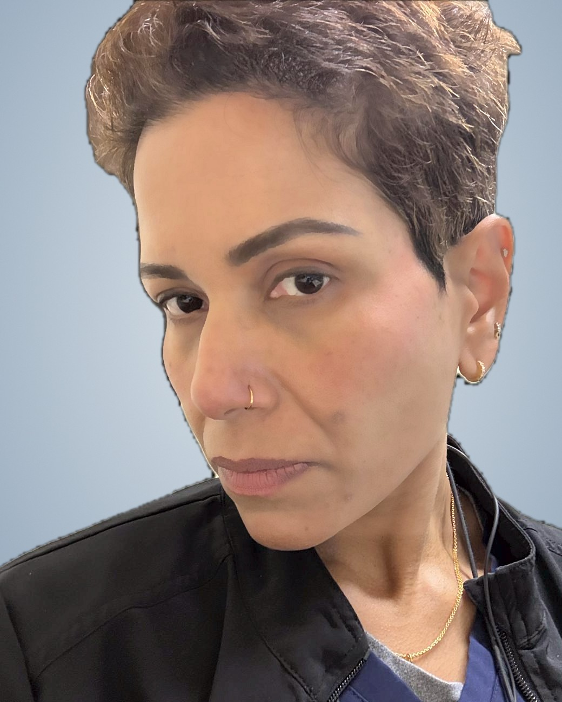
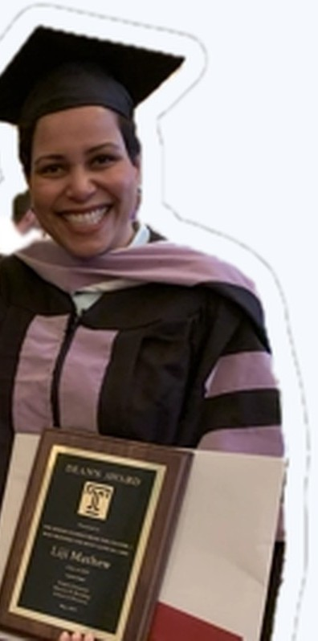

"Where do I even begin?"
Get a clear picture of every route (advanced standing, state options, residencies) and the exact order to tackle ECE, INBDE, TOEFL and CAAPID.
Read the Pathway Guide →For internationally trained dentists
Dr. Liji Mathew trained as a dentist and prosthodontist in India, then earned her U.S. DMD summa cum laude from Temple University. Now she coaches international dentists, 1-on-1, through the bench test, interview and application that decide admission.


Start where you are
Get a clear picture of every route (advanced standing, state options, residencies) and the exact order to tackle ECE, INBDE, TOEFL and CAAPID.
Read the Pathway Guide →Build a school list that fits your profile, sharpen your personal statement, plan your letters, and start bench and interview prep before invitations arrive.
Application strategy →Intensive, school-specific training on your exact procedure list, plus mock interviews with honest feedback. This is where offers are won.
Get urgent help →
Meet your mentor
Dr. Mathew has walked the path you're on. She was a foreign-trained dentist, prosthodontist and dental educator who started over in the United States and graduated at the top of her class.
She grew up in Kochi (Cochin) in South India. She earned her BDS with distinction at Christian Medical College, Ludhiana, then her MDS in Prosthodontics and Implantology at Amrita School of Dentistry, Kochi, where she won the Gold Medal for the graduate with the highest academic and clinical skills. She taught restorative dentistry, prosthodontics and endodontics at dental schools in India and served underserved communities in the Himalayan foothills.
After moving to the U.S., she earned her DMD from Temple University's Kornberg School of Dentistry (Class of 2019), graduating summa cum laude. She also received the Dean's Award, given to the senior student in her clinic cluster who provided the most clinical care. Today she practices in the Houston / Katy, Texas area and mentors international dentists through the same journey she completed herself.


"Dentistry is a great career option, provided that you are ready to put a lot of time."
Dr. Liji Mathew, on her journey as a newcomer dentist
The road map
Most states require a degree from a CODA-accredited U.S. school for a full license. That's why most international dentists complete an advanced standing program: about 47 schools offer one, usually lasting 2 to 3 years. The core steps are below.
Order an ECE Course-by-Course evaluation ($199). The INBDE requires ECE, and most schools want Course-by-Course.
500 items over 2 days, pass/fail. Most programs require a passing result before you apply.
Minimums range from about 80 to 100, or 4.0 to 5.0 on the new 2026 scale. Many schools don't accept IELTS.
Opens in early March. Deadlines run from June to October. Apply early: $264 for the first school and $115 for each additional one.
The step that most often decides an offer, and formats vary by school. This is where we specialize.
A 2–3 year program, then the ADEX exam and state requirements, and you're a licensed U.S. dentist.
Services & training
Programs
All coaching is 1-on-1. Sessions run online worldwide, or in person in the Houston / Katy, Texas area.
Contact for current rates
Contact for current rates
Contact for current rates
Bench test deep-dive
The bench (psychomotor) test is a timed, hands-on exam, usually on a typodont in a simulation lab. Formats vary: some schools hold none, while others run multi-day visits with lectures, practice time and the exam itself. Common elements include:
Procedures differ by school. We train for the exact list in your invitation.
Interview deep-dive
Interviewers look beyond clinical knowledge to judgment, ethics, communication and fit. Many strong clinicians lose offers because their answers are generic, too long or out of step with U.S. patient-centred care.
How it works
Tell us about your degree, exam status, target schools and timeline. Bring your Planner results.
Get a session plan focused on your gaps: the interview, the bench test or both.
Practise with honest feedback until you're ready for test day.
FAQ
For a full license in most states, yes. You need a degree from a CODA-accredited program, which is why most international dentists complete a 2–3 year advanced standing program. A few states offer alternatives. Minnesota has a limited license with supervised practice, Texas accepts 2 years of CODA specialty training, and Florida accepts 2 years in a supplemental general dentistry program. These are usually limited to that one state. See the Pathway Guide.
Dentists who earned their degree outside the U.S. and Canada and are applying to advanced standing DDS/DMD programs, or to residencies that include a bench test or interview. It works for first-time applicants and reapplicants at any stage.
Before you get an invitation. Invitations can arrive with only a few weeks' notice, and hand skills take months to sharpen. Most candidates start while their CAAPID application is being verified.
No. Formats vary. Some schools don't hold one, while others test operative and fixed prosthodontic procedures, sometimes during a multi-day visit. Read each invitation carefully. We train for your exact list.
At many schools, yes, typically on an F-1 student visa. But some programs only accept U.S. citizens or permanent residents (for example UMKC and the University of Florida). Check each program's eligibility before you pay application fees.
Both. Interview and application coaching work very well online, worldwide. Bench test prep combines online technique reviews and feedback on photos and video of your preps, with in-person typodont sessions in the Houston / Katy, Texas area.
No one can honestly guarantee admission, because each school makes its own decisions. What we offer is focused, expert preparation that makes you a much stronger candidate at the steps that matter most.
Fees depend on the program and number of sessions. Book a free consultation and we'll recommend a plan and give you a quote.
Have another question?
Limited 1-on-1 spots
Book a free consultation. Tell us where you are in the process and we'll build a plan to get you ready.